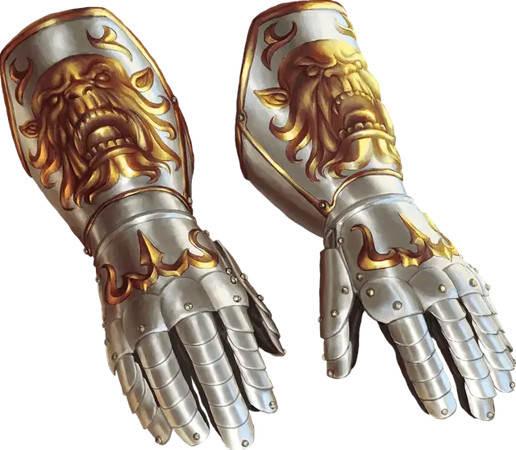

Рукавицы силы огра
Gauntlets of Ogre Power
Чудесный предмет, необычный (требуется настройка)

Рекомендованная стоимость 101-500 зм
Ваша Сила равна 19, когда вы носите эти латные рукавицы. Они не оказывают на вас эффект, если ваша Сила без них уже 19 или выше.